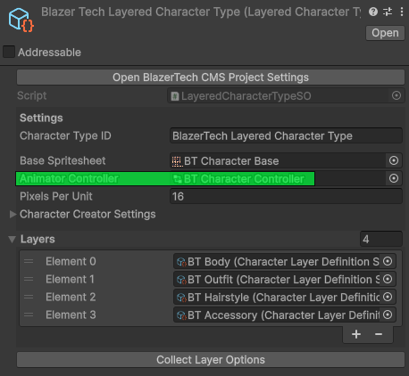

Character Animation Setup
This page goes over how to create and properly configure an Animator Controller to be used by a Character Type asset.
Overview
Every Character Type asset can include an Animator Controller.
All animations should use sprites from the Base Spritesheet assigned in the Character Type asset.
All characters using the same Character Type can use a single Animator Controller. No need to create a separate Animator/Override Controller for every new character.
Confused how it's possible to only use one Animator Controller for every character? Read about The Character Shader.
The setup process is the same for both Unified and Layered Character Types.
Important
All animations must only use sprites from the Base Spritesheet.
If sprites from other sheets are used, they will not render correctly when used with the Character Shader.
If you already have your own movement and animator handling scripts, you can setup the Animator Controller however you need for you project. That means you can create your own parameters, animation states, blend trees, etc.
Integration with Built-In Scripts
The BlazerTech Character Management System includes pre-built movement and animator handling scripts. The included scripts contain support for the following movement animations:
- Idle
- Walk
- Sprint
- Crouch-Idle
- Crouch-Moving
Additional animations can be played at runtime using:
PlayAnimation("AnimationName");
on any Character Animator Handler component.
1️⃣Create an Animator Controller
- In the Project window, right-click and select
Create > Animation > Animator Controller. - Name asset (Recommended to name it after the Character Type it's used for)
- Double-click to open it in the Animator window.
You should now see an empty Animator Controller.
2️⃣Add Parameters
The built-in Character Animator Handler components do not call animations directly.
Instead, they modify parameters set in the Animator Controller, which control transitions between animation states.
The Parameters section is located in the top left of the Animator window.

Required Parameters
| Parameter Name | Type | Usage |
|---|---|---|
| Horiztonal Movement | Float | Ranges from -1 to 1. Represents left/right movement on the X-axis. |
| Vertical Movement | Float | Ranges from -1 to 1. Represents up/down movement on the Y-axis. |
| Is Moving | Bool | True when the character is moving; otherwise false. |
Optional Parameters
Optional parameters will only be used if toggled in the movement and animator handler components.
| Parameter Name | Type | Usage |
|---|---|---|
| Is Sprinting | Bool | True when the character is sprinting; otherwise false. |
| Is Crouching | Bool | True when the character is crouching; otherwise false. |
Important
These parameter names must match exactly with what's set in the built-in Animator Handler components.
3️⃣Add Animation States
Because the built-in animator handler components only modify parameters, you can design your animation state layout freely.
A common approach is to use Blend Trees for animations that play in four directions (Up, Down, Left, Right).
In this example we'll be setting up an Idle and Walk blend tree.
Create Animation Clips
Right Click the Project window and navigate to Create > Animation > Animation Clip.
We'll create 4 animation clips. 1 for each direction.
Idle
- Idle Down
- Idle Up
- Idle Left
- Idle Right
Walk
- Walk Down
- Walk up
- Walk Left
- Walk Right
You can leave these clips empty for now, we’ll add frames later.
Create and Setup Blend Trees
Repeat these steps for each 4 directional animation set you want to setup.
- Right-click Animator window >
Create State > From New Blend Tree. - Name the blend tree after the animation name (eg: Idle, Walk).
- Double click the blend tree to open it.
- In the Blend Tree, set Blend Type to
2D Simple Directional. - Assign Blend Parameters to:
- X:
Horizontal Movement - Y:
Vertical Movement
- X:
- Add motions for each direction (Up, Down, Left, Right).
- Assign animations to each motion from the animation clips we created earlier.
- Set X and Y position to correspond to all 4 directions for each animation.
Coordinate Cheat Sheet
| X Coordinate | Y Coordinate | Direction |
|---|---|---|
| 0 | -1 | Down |
| 0 | 1 | Up |
| -1 | 0 | Left |
| 1 | 0 | Right |

4️⃣Setup State Transitions
Lets tell the Animator Controller how to transition between states.
The entry state should be the Idle blend tree.
Right click the Idle blend tree and select Set As Layer Default State.
Create a transition from Idle to Walk:
Right clickon the Idle Blend tree.- Select
Make Transition. - Hover over and click on the
Walkblend tree.
Now lets add a condition to the transition.
- Right click the new transition line.
- Add a new condition.
- Assign the
Is Movingparameter and the value to true. - Disable
Has Exit Timeto avoid a delay when transitioning.
Now when the character starts moving they will automatically go from the Idle blend tree to the Walk blend tree
Now Make another transition from Walk to Idle.
Once again add a new condition, this time set Is Moving to false.
This way when the character stops moving they'll go back to playing The idle animations.
5️⃣Setup Animation Clips
Now it's time to setup the animation clips we created earlier.
Add an Animator and Sprite Renderer component to any game object.
- Make sure the game object is selected.
- Go to the Animation Tab.
- Select the animation you want to edit.
- Bulk select all sprite frames.
- Drag and drop them into the Animation timeline.
- Set Samples. This is essentially the frame rate of your animation. (Recommended: 12)
Repeat for each animation clip.
6️⃣Add Additional Animations (Optional)
You can expand your Animator with as many custom animations as needed.
Single-Direction Animations
For animation that only play in one direction:
- Create a new state.
- Assign the clip directly.
Multi-Directional Animation
For Directional animations:
- Create another blend tree using the same setup as before.
When played, the blend tree automatically chooses the correct direction.
If an animation is not looped, add a transition back to Idle or the Exit node.
Animations can be triggered manually via:
animator.Play("AnimationName");
or
animatorHandler.PlayAnimation("AnimationName");
(using the included Animator Handler components).
7️⃣Assign to a Character Type
Once your Animator Controller is ready:
- Select your Character Type asset.
- In the Inspector, find the Animator Controller field.
- Drag your new Animator Controller into this field.
It should look like this:

When used with a Character Renderer component,
the assigned Animator Controller will automatically be applied at runtime.